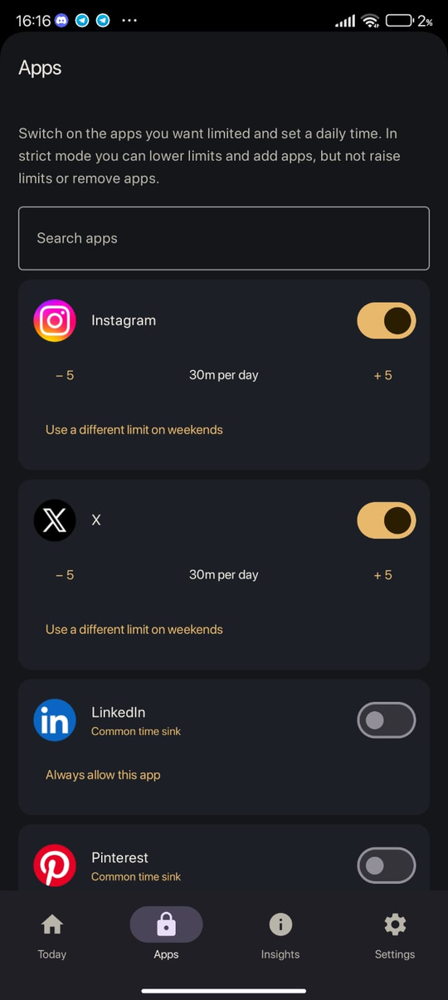
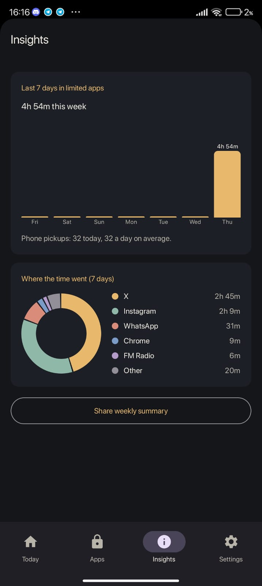
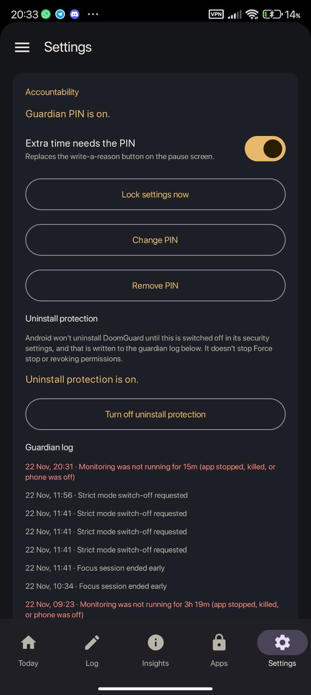

What it does
Limits that bite
Daily limits per app, weekend limits, and a shared daily cap across all of them.
A pause that makes you think
A breathing circle, a quote about the choice you are making, and a better idea, before any extra time.
Guardian PIN
Someone you trust holds a PIN that gates every change that loosens your rules. Overrides are logged.
Website filter
Blocks adult sites in every browser and app using a private on-phone filter. Nothing leaves your phone.
See where your time goes
Today, a 7-day chart, top apps, pickups and what triggers your scrolling.
Private by design
No servers, no accounts, no analytics. All data stays on your phone.
Install
- On your phone, open the latest release and download
DoomGuard.apk. - Open the file. If Android asks, allow installs from your browser or file manager ("Install unknown apps"). Play Protect may show a warning because the app is not from the Play Store. Choose to install anyway.
- Open DoomGuard and grant Usage access and Display over other apps when it asks.
- Pick the apps to limit and set their daily time.
- Optional: set a guardian PIN (ask someone you trust to choose it) and switch on the website filter.
Check your download. The release notes list a SHA-256 checksum. Compare it with the file you downloaded to make sure nothing was changed on the way.
Keep it running
Xiaomi / Redmi / Poco
In Settings, Apps, DoomGuard, turn on Autostart, set Battery saver to "No restrictions", and enable "Display pop-up windows while running in the background". Lock the app in recent apps.
Samsung, Tecno, Infinix, Oppo
Set DoomGuard's battery use to "Unrestricted" and allow auto-start so the system does not close it.
For the website filter
Set Android's Private DNS to Off or Automatic, and turn off "Use secure DNS" in Chrome. Browsers using their own secure DNS skip the filter.
Honest limits
DoomGuard is a speed bump you choose, not a lock. Android does not let any app stop someone from force-stopping it, revoking its permissions or clearing its data. DoomGuard records those events in the guardian log instead. It cannot see cloned apps made by "Dual apps" or "Second space", and only one VPN can run at a time, which matters if you use another VPN app.